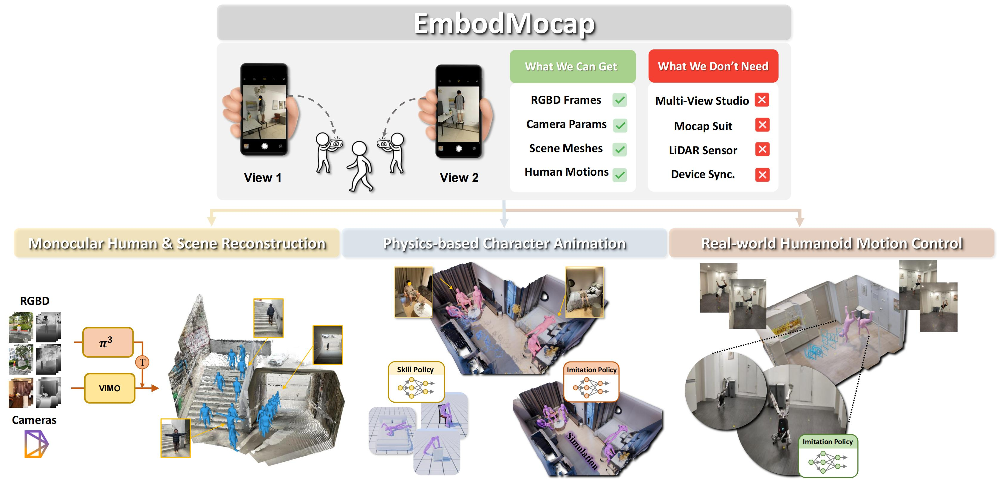

Abstract
Human behaviors in the real world naturally encode rich, long-term contextual information that can be leveraged to train embodied agents for perception, understanding, and acting. However, existing capture systems typically rely on costly studio setups and wearable devices, limiting the large-scale collection of scene-conditioned human motion data in the wild. To address this, we propose EmbodMocap, a portable and affordable data collection pipeline using two moving iPhones.
Our key idea is to jointly calibrate dual RGB-D sequences to reconstruct both humans and scenes within a unified metric world coordinate frame. The proposed method allows metric-scale and scene-consistent capture in everyday environments without static cameras or markers, bridging human motion and scene geometry seamlessly. Compared with optical capture ground truth, we demonstrate that the dual-view setting exhibits a remarkable ability to mitigate depth ambiguity, achieving superior alignment and reconstruction performance over single iPhone or monocular models. Based on the collected data, we empower three embodied AI tasks: monocular human-scene reconstruction, physics-based character animation, and robot motion control. Experimental results validate the effectiveness of our pipeline and its contributions towards advancing embodied AI research.
Captured Dataset
0615stairs1_seq3
0618stair1_seq0
0902bedroom1_seq8
0914livingroom1_seq13
Motion Tracking Results
Track A
Track B
Track C
Track D
HOI Skill Results
Climb
GVHMR
Optical
Ours
Sit
GVHMR
Optical
Ours
Lie
GVHMR
Optical
Ours
Prone
GVHMR
Ours
Support
GVHMR
Ours
Support2
GVHMR
Ours
Robot Motion Control
Robot Seq 3
Robot Seq 5
Robot Seq 10
BibTeX
@inproceedings{wang2026embodmocap,
title={EmbodMocap: In-the-Wild 4D Human-Scene Reconstruction for Embodied Agents},
author={Wang, Wenjia and Pan, Liang and Pi, Huaijin and Lou, Yuke and Ren, Xuqian and Wu, Yifan and Liao, Zhouyingcheng and Yang, Lei and Dabral, Rishabh and Theobalt, Christian and Komura, Taku},
booktitle={CVPR},
year={2026}
}